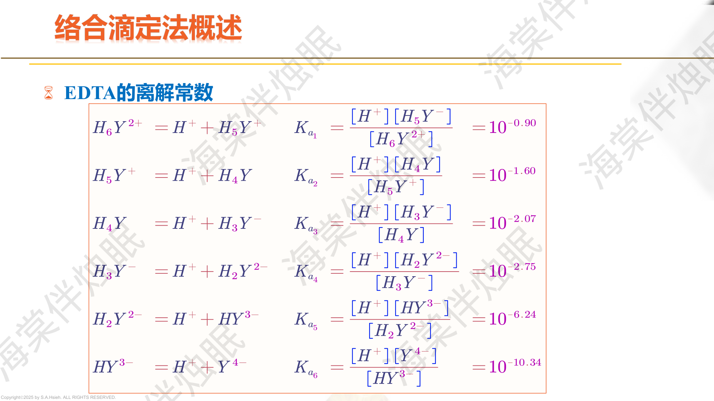
PPT: EDTA的结构与配位特点
EDTA（乙二胺四乙酸）是一种六元酸（$\text{H}_6\text{Y}^{2+}$），含有 2 个氨基氮和 4 个羧基氧，共提供 6 个配位原子。通常使用其二钠盐 $\text{Na}_2\text{H}_2\text{Y}\cdot 2\text{H}_2\text{O}$（$M = 372.24$）。
金属-EDTA 配合物结构（M-Y 六齿螯合）
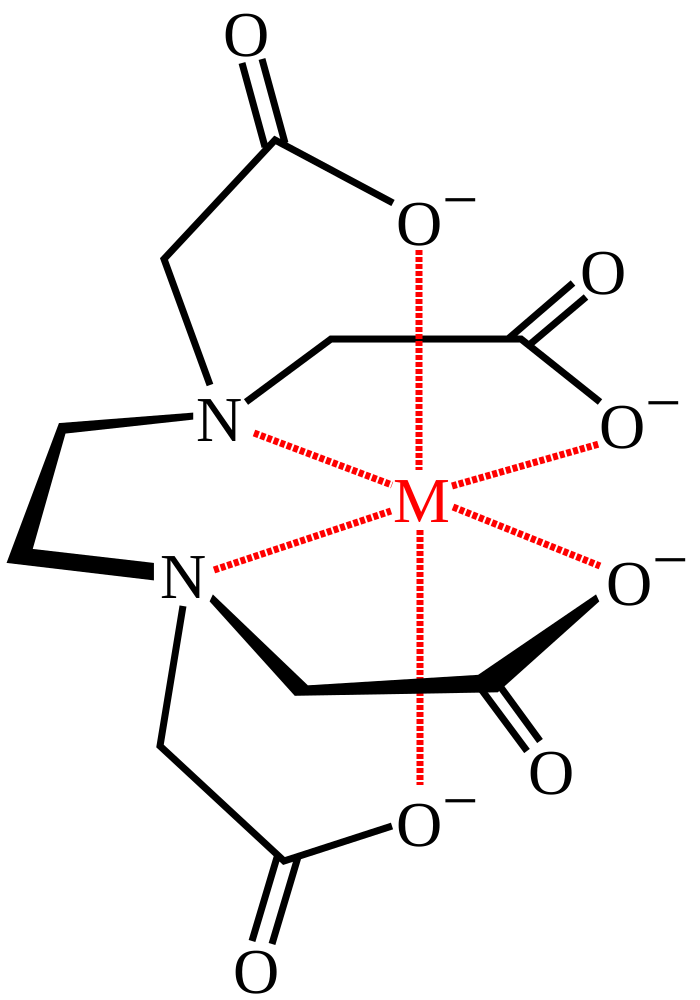
M(κ⁶-EDTA)：2个N + 4个O共6个配位原子与金属离子配位，形成5个五元螯合环
EDTA 是六元酸，在不同 pH 下以不同形态存在。由 $\text{p}K_a$ 值可以判断各 pH 区间的主要存在形态：
| pH 范围 | 主要形态 | 说明 |
|---|---|---|
| $< 0.9$ | $\text{H}_6\text{Y}^{2+}$ | 完全质子化 |
| $0.9 \sim 1.6$ | $\text{H}_5\text{Y}^{+}$ | 失去一个氨基质子 |
| $1.6 \sim 2.07$ | $\text{H}_4\text{Y}$ | 两个氨基质子全部失去 |
| $2.07 \sim 2.75$ | $\text{H}_3\text{Y}^{-}$ | 失去一个羧基质子 |
| $2.75 \sim 6.24$ | $\text{H}_2\text{Y}^{2-}$ | 二钠盐溶解后的主要形态 |
| $6.24 \sim 10.34$ | $\text{HY}^{3-}$ | pH 6.24 ~ 10.34 之间占主导 |
| $> 10.34$ | $\text{Y}^{4-}$ | 完全去质子化，配位能力最强 |
| 金属离子 | $\lg K_{MY}$ | 金属离子 | $\lg K_{MY}$ |
|---|---|---|---|
| $\text{Mg}^{2+}$ | 8.7 | $\text{Pb}^{2+}$ | 18.0 |
| $\text{Ca}^{2+}$ | 10.7 | $\text{Cu}^{2+}$ | 18.8 |
| $\text{Mn}^{2+}$ | 13.8 | $\text{Ni}^{2+}$ | 18.6 |
| $\text{Fe}^{2+}$ | 14.3 | $\text{Hg}^{2+}$ | 21.8 |
| $\text{Co}^{2+}$ | 16.3 | $\text{Al}^{3+}$ | 16.1 |
| $\text{Zn}^{2+}$ | 16.5 | $\text{Fe}^{3+}$ | 25.1 |
| $\text{Cd}^{2+}$ | 16.5 | $\text{Bi}^{3+}$ | 27.9 |
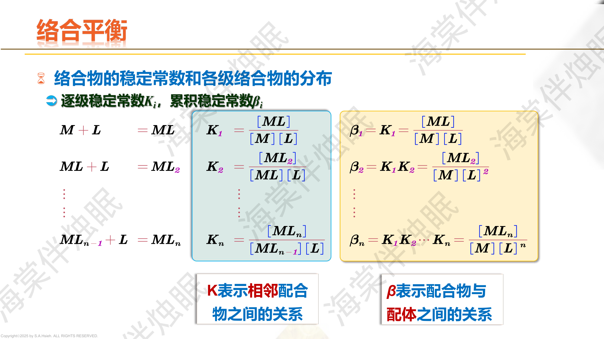
PPT: 逐级稳定常数与累积稳定常数
对于金属离子 M 与配位体 L 的逐级配位反应：
$$M + L \rightleftharpoons ML \quad K_1 = \frac{[\text{ML}]}{[\text{M}][\text{L}]}$$ $$ML + L \rightleftharpoons ML_2 \quad K_2 = \frac{[\text{ML}_2]}{[\text{ML}][\text{L}]}$$ $$\vdots$$ $$ML_{n-1} + L \rightleftharpoons ML_n \quad K_n = \frac{[\text{ML}_n]}{[\text{ML}_{n-1}][\text{L}]}$$$K_i$ 表示相邻配合物之间的平衡关系，一般 $K_1 > K_2 > \cdots > K_n$。
$\beta_n$ 表示配合物 $ML_n$ 与游离 M、L 之间的总平衡关系：
$$\beta_n = K_1 \cdot K_2 \cdots K_n = \frac{[\text{ML}_n]}{[\text{M}][\text{L}]^n}$$即 $\beta_1 = K_1$，$\beta_2 = K_1 K_2$，$\beta_n = \prod_{i=1}^{n}K_i$。
由此可得各级配合物浓度：$[\text{ML}_n] = \beta_n[\text{M}][\text{L}]^n$。
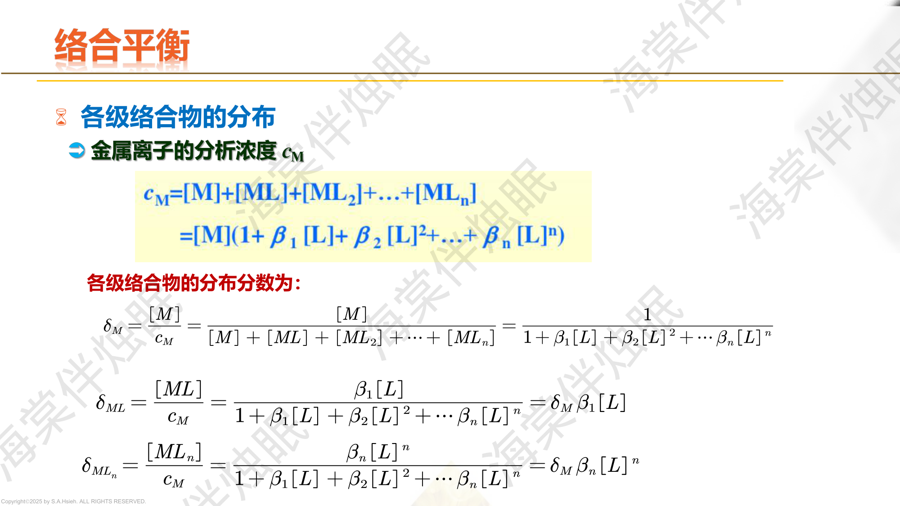
PPT: 各级配合物的分布
金属离子的分析总浓度 $c_M$ 为各种形态之和：
$$c_M = [\text{M}] + [\text{ML}] + [\text{ML}_2] + \cdots + [\text{ML}_n] = [\text{M}](1 + \beta_1[\text{L}] + \beta_2[\text{L}]^2 + \cdots + \beta_n[\text{L}]^n)$$各级配合物的分布分数：
$$\delta_M = \frac{[\text{M}]}{c_M} = \frac{1}{1 + \beta_1[\text{L}] + \beta_2[\text{L}]^2 + \cdots + \beta_n[\text{L}]^n}$$ $$\delta_{ML_i} = \frac{[\text{ML}_i]}{c_M} = \frac{\beta_i[\text{L}]^i}{1 + \beta_1[\text{L}] + \beta_2[\text{L}]^2 + \cdots + \beta_n[\text{L}]^n} = \delta_M \cdot \beta_i[\text{L}]^i$$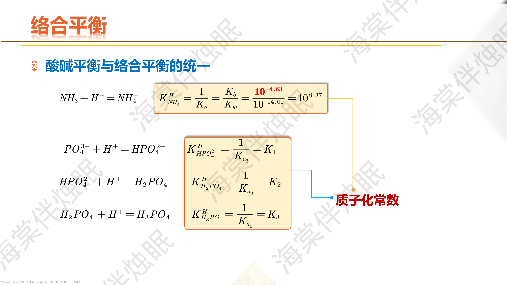
PPT: 酸碱平衡与络合平衡的统一
质子化反应可视为以 $\text{H}^+$ 为"配位体"的配位反应。质子化常数 $K^H$ 与酸离解常数 $K_a$ 的关系：
$$K_1^H = \frac{1}{K_{a,n}}, \quad K_2^H = \frac{1}{K_{a,n-1}}, \quad \ldots$$例如 $\text{NH}_3 + \text{H}^+ \rightleftharpoons \text{NH}_4^+$，其 $K^H_{\text{NH}_3} = \frac{1}{K_a} = \frac{K_b}{K_w} = 10^{9.37}$。
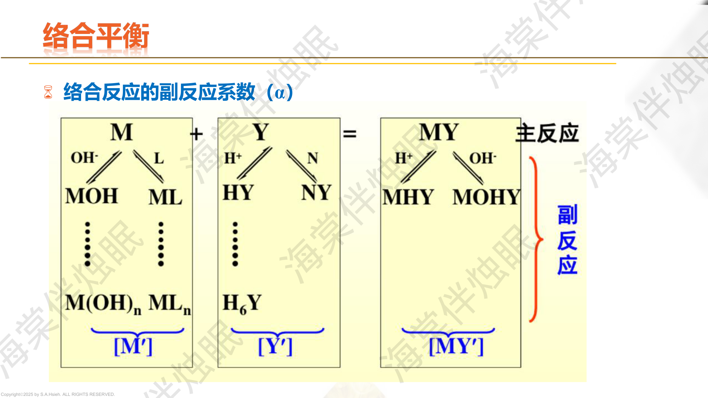
PPT: 副反应系数的定义与分类
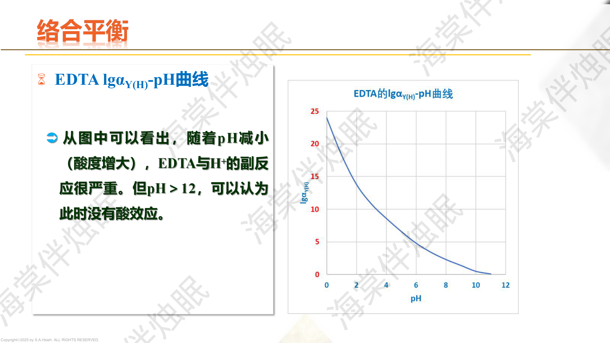
PPT: 副反应系数的计算
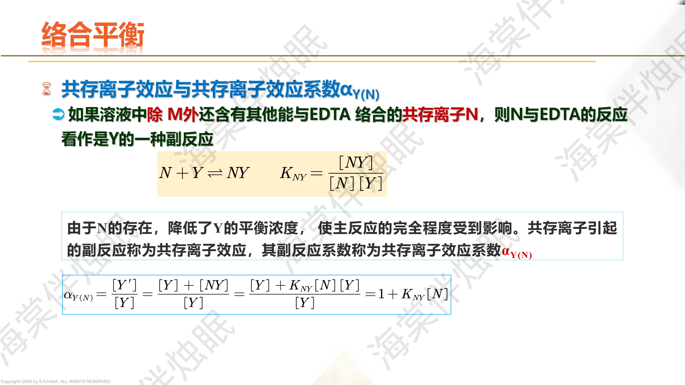
PPT: 条件稳定常数
在配位滴定中，EDTA 参与的副反应主要有两类：
反映 H$^+$ 对 EDTA 配位能力的影响：
$$\alpha_{Y(H)} = \frac{[\text{Y}']}{[\text{Y}^{4-}]} = 1 + \frac{[\text{H}^+]}{K_{a6}} + \frac{[\text{H}^+]^2}{K_{a6}K_{a5}} + \cdots$$酸度越大，$\alpha_{Y(H)}$ 越大，EDTA 配位能力越弱。
溶液中共存金属离子 N 与 EDTA 形成配合物，消耗 Y：
$$\alpha_{Y(N)} = 1 + K_{NY}[\text{N}]$$若多种共存离子：$\alpha_Y = \alpha_{Y(H)} + \alpha_{Y(N_1)} + \alpha_{Y(N_2)} + \cdots - (k-1)$，其中 $k$ 为副反应总数。通常简化为 $\alpha_Y \approx \alpha_{Y(H)} \cdot \alpha_{Y(N)}$（当各项远大于 1 时）。
该表是配位滴定计算的基础，考试务必熟记关键数值：
| pH | 0 | 1 | 2 | 3 | 4 | 5 | 6 | 7 | 8 | 9 | 10 | 11 | 12 |
|---|---|---|---|---|---|---|---|---|---|---|---|---|---|
| $\lg\alpha_{Y(H)}$ | 24.0 | 18.3 | 13.5 | 10.8 | 8.6 | 6.6 | 4.8 | 3.4 | 2.3 | 1.4 | 0.5 | 0.1 | $\approx 0$ |
已知 $\text{p}K_{a1}=0.9$, $\text{p}K_{a2}=1.6$, $\text{p}K_{a3}=2.07$, $\text{p}K_{a4}=2.75$, $\text{p}K_{a5}=6.24$, $\text{p}K_{a6}=10.34$。
pH = 5，即 $[\text{H}^+] = 10^{-5}$。
$$\alpha_{Y(H)} = 1 + \frac{[\text{H}^+]}{K_{a6}} + \frac{[\text{H}^+]^2}{K_{a6}K_{a5}} + \frac{[\text{H}^+]^3}{K_{a6}K_{a5}K_{a4}} + \cdots$$
逐项计算：
实际上第 2 项最大，$\alpha_{Y(H)} \approx 10^{6.58} + 10^{5.34} + \cdots$
取对数：$\lg\alpha_{Y(H)} \approx 6.6$（查表值一致）
溶液 pH = 10，含 $\text{Mg}^{2+}$（$c = 0.01$ mol/L）作为共存离子，$\lg K_{\text{MgY}} = 8.7$。求 $\alpha_Y$。
pH = 10 时，$\lg\alpha_{Y(H)} = 0.5$，即 $\alpha_{Y(H)} = 10^{0.5} = 3.16$
$\alpha_{Y(N)} = 1 + K_{\text{MgY}}[\text{Mg}^{2+}] = 1 + 10^{8.7} \times 0.01 = 1 + 10^{6.7} \approx 10^{6.7}$
总副反应系数（严格公式）：
$$\alpha_Y = \alpha_{Y(H)} + \alpha_{Y(N)} - 1 = 3.16 + 10^{6.7} - 1 \approx 10^{6.7}$$此时共存离子效应远大于酸效应，$\lg\alpha_Y \approx 6.7$。
金属离子 M 与辅助配位体 L（如 $\text{NH}_3$）反应：
$$\alpha_{M(L)} = 1 + \beta_1[\text{L}] + \beta_2[\text{L}]^2 + \cdots + \beta_n[\text{L}]^n$$金属离子水解导致参与配位反应的游离金属减少：
$$\alpha_{M(OH)} = 1 + \beta_1^{OH}\frac{K_w}{[\text{H}^+]} + \beta_2^{OH}\left(\frac{K_w}{[\text{H}^+]}\right)^2 + \cdots$$pH 越高，$\alpha_{M(OH)}$ 越大。
若同时存在辅助配位效应和羟基效应：
$$\alpha_M = \alpha_{M(L)} + \alpha_{M(OH)} - 1$$当某一项远大于另一项时，取较大值近似。
在 0.01000 mol/L $\text{Zn(NH}_3)_4^{2+}$ 溶液中，游离氨浓度为 0.10 mol/L，已知 pH = 10，$\lg\alpha_{\text{Zn(OH)}} = 2.4$，$\lg\alpha_{Y(H)} = 0.5$。$\text{Zn-NH}_3$ 的各级累积稳定常数：$\lg\beta_1 = 2.27$, $\lg\beta_2 = 4.61$, $\lg\beta_3 = 7.01$, $\lg\beta_4 = 9.06$。计算 pH = 10 时的 $\alpha_{\text{Zn}}$。
第一步：计算 $\alpha_{\text{Zn(NH}_3)}$
$$\alpha_{\text{Zn(NH}_3)} = 1 + \beta_1[\text{NH}_3] + \beta_2[\text{NH}_3]^2 + \beta_3[\text{NH}_3]^3 + \beta_4[\text{NH}_3]^4$$ $$= 1 + 10^{2.27}\times 0.10 + 10^{4.61}\times 0.01 + 10^{7.01}\times 0.001 + 10^{9.06}\times 0.0001$$ $$= 1 + 10^{1.27} + 10^{2.61} + 10^{4.01} + 10^{5.06} \approx 10^{5.10}$$第二步：已知 $\alpha_{\text{Zn(OH)}} = 10^{2.4}$
第三步：金属总副反应系数
$$\alpha_{\text{Zn}} = \alpha_{\text{Zn(NH}_3)} + \alpha_{\text{Zn(OH)}} - 1 = 10^{5.10} + 10^{2.4} - 1 \approx 10^{5.10}$$（$\alpha_{\text{Zn(NH}_3)}$ 远大于 $\alpha_{\text{Zn(OH)}}$，后者可忽略）
第四步：条件稳定常数
$$\lg K'_{\text{ZnY}} = \lg K_{\text{ZnY}} - \lg\alpha_{\text{Zn}} - \lg\alpha_{Y(H)} = 16.50 - 5.10 - 0.5 = 10.9$$EDTA 溶液中含有 HCN（$K_a = 6.2 \times 10^{-10}$），HCN 对 Y 有副反应。已知 $[\text{HCN}] = 0.1$ mol/L，pH = 10.0。计算 $\alpha_{Y(\text{CN})}$。
首先求 $[\text{CN}^-]$ 的浓度：
$$[\text{CN}^-] = \frac{K_a \cdot [\text{HCN}]}{[\text{H}^+]} = \frac{6.2\times 10^{-10} \times 0.1}{10^{-10}} = 0.62\;\text{mol/L}$$实际上，pH = 10 时 HCN 基本解离（$K_a / [\text{H}^+] = 6.2$），所以大部分以 $\text{CN}^-$ 形式存在。
CN$^-$ 与金属的副反应系数：$\alpha_{M(\text{CN})} = 1 + \beta_1[\text{CN}^-] + \beta_2[\text{CN}^-]^2 + \cdots$
PPT: 逐级稳定常数与累积稳定常数
取对数形式：
$$\boxed{\lg K'_{MY} = \lg K_{MY} - \lg\alpha_M - \lg\alpha_Y}$$其中 $\lg\alpha_M = \lg\alpha_{M(L)} + \lg\alpha_{M(OH)}$（若两者都显著），$\lg\alpha_Y = \lg\alpha_{Y(H)} + \lg\alpha_{Y(N)}$（通常 $\alpha_{Y(H)}$ 占主导）。
$\lg K_{ZnY} = 16.5$
$\lg K'_{ZnY} = \lg K_{ZnY} - \lg\alpha_{Y(H)} = 16.5 - 6.6 = 9.9$
条件稳定常数足够大，可以准确滴定。
查表：pH = 5 时，$\lg\alpha_{Y(H)} = 6.6$
$\lg K_{\text{PbY}} = 18.0$
$\lg K'_{\text{PbY}} = 18.0 - 6.6 = 11.4$
判据：$\lg c_{sp} K'_{\text{PbY}} = \lg(0.01) + 11.4 = -2 + 11.4 = 9.4$
$9.4 \geq 6$ ，满足准确滴定条件。
查表：pH = 2 时，$\lg\alpha_{Y(H)} = 13.5$
$\lg K_{\text{ZnY}} = 16.5$
$\lg K'_{\text{ZnY}} = 16.5 - 13.5 = 3.0$
判据：$\lg c_{sp} K'_{\text{ZnY}} = -2 + 3.0 = 1.0$
$1.0 < 6$，不能准确滴定。
由 $\lg c_{sp}K'_{MY} \geq 6$ 得：
$$\lg K_{MY} - \lg\alpha_{Y(H)} + \lg c \geq 6$$ $$\lg\alpha_{Y(H)} \leq \lg K_{MY} + \lg c - 6 = 16.5 + \lg(0.02) - 6 = 16.5 - 1.7 - 6 = 8.8$$查表：$\lg\alpha_{Y(H)} = 8.8$ 对应 pH 约在 3.5 ~ 4 之间。
因此 $\text{Zn}^{2+}$ 的最低滴定 pH 约为 3.5 ~ 4。
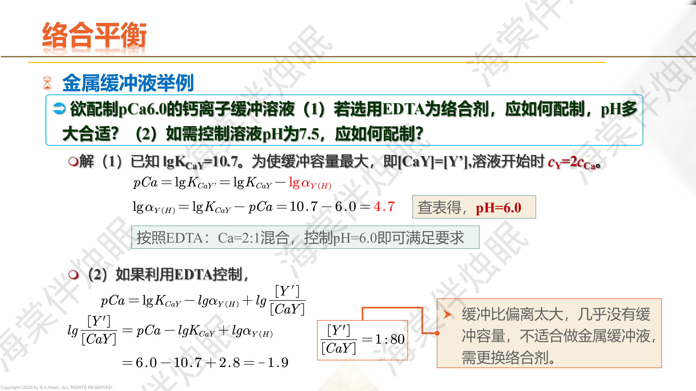
PPT: EDTA配位滴定曲线
配位滴定曲线以 $pM'$（$pM' = -\lg[\text{M}']$）为纵轴，滴定剂加入体积（或滴定百分数）为横轴。
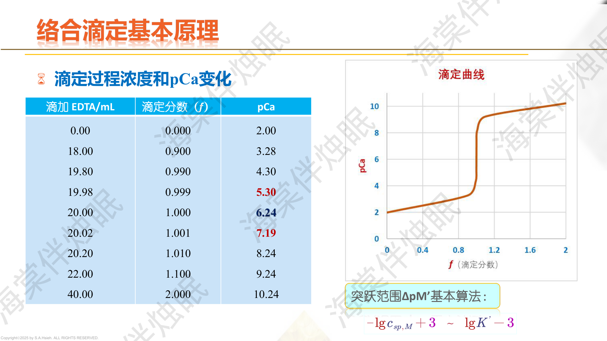
PPT: 滴定曲线与突跃范围
突跃范围（化学计量点前后 $\pm 0.1\%$ 所对应的 $pM'$ 变化）的近似公式：
$$\Delta pM' = (-\lg c_{sp,M} + 3) - (\lg K'_{MY} - 3)$$即突跃下限 $pM'_{99.9\%} \approx -\lg c_{sp,M} + 3 = pc_{sp} + 3$，突跃上限 $pM'_{100.1\%} \approx \lg K'_{MY} - 3$。
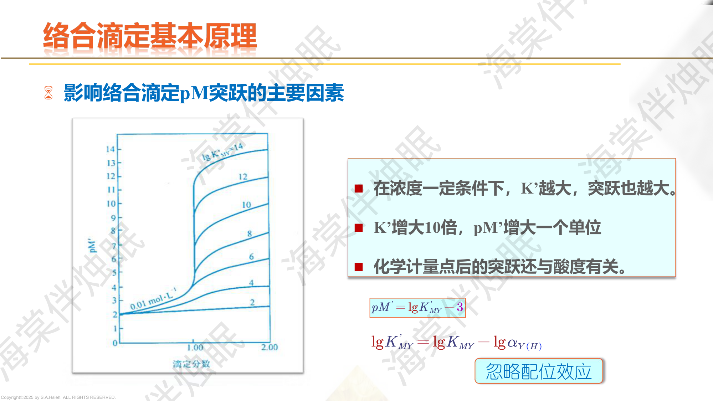
PPT: 影响pM突跃的主要因素
此时金属离子过量，溶液中 M' 浓度由未反应的金属离子决定：
$$[\text{M}'] = c_M \cdot \frac{1-\phi}{1+\phi/(V_0/V_0)} \approx c_M(1-\phi) \cdot \frac{V_0}{V_0+V}$$当 $\phi = 0.5$（即加入一半 EDTA）时，约一半金属被配位：$[\text{M}'] \approx c_M / 2$（稀释因子近似忽略或精确考虑）。
此时 EDTA 过量：
$$[\text{Y}'] = c_{EDTA} \cdot \frac{(\phi - 1)V_{eq}}{V_0 + V}$$ $$[\text{M}'] = \frac{[\text{MY}]}{K'_{MY} \cdot [\text{Y}']}$$$c_{sp} = \frac{0.020 \times 20.00}{40.00} = 0.010\;\text{mol/L}$，故 $pc_{sp} = 2.00$
$pZn'_{sp} = \frac{1}{2}(10.05 + 2.00) = 6.03$
50% 处 ($\phi = 0.5$)：
$[\text{Zn}'] = \frac{0.020 \times 20.00 - 0.020 \times 10.00}{30.00} = \frac{0.200}{30.00} = 6.67 \times 10^{-3}$
$pZn' = -\lg(6.67 \times 10^{-3}) = 2.18$
99.9% 处 ($\phi = 0.999$)：
$[\text{Zn}'] = \frac{0.020 \times (1-0.999) \times 20.00}{39.98} = \frac{0.020 \times 0.001 \times 20.00}{39.98} = 1.0 \times 10^{-5}$
$pZn' = 5.0$
100.1% 处 ($\phi = 1.001$)：
$[\text{Y}'] = \frac{0.020 \times 0.001 \times 20.00}{40.02} = 1.0 \times 10^{-5}$
$[\text{Zn}'] = \frac{c_{sp}}{K'_{ZnY} \cdot [\text{Y}']} = \frac{0.010}{10^{10.05} \times 10^{-5}} = \frac{0.010}{10^{5.05}} = 10^{-7.05}$
$pZn' = 7.05$
200% 处 ($\phi = 2$)：
$[\text{Y}'] = \frac{0.020 \times 20.00}{60.00} = 6.67 \times 10^{-3}$
$[\text{Zn}'] = \frac{0.010}{10^{10.05} \times 6.67 \times 10^{-3}} = \frac{0.010}{10^{7.87}} = 10^{-9.87}$
$pZn' = 9.87$
滴定突跃范围：$pZn' = 5.0 \sim 7.1$（99.9% ~ 100.1%），突跃 $\Delta pZn' \approx 2.1$。
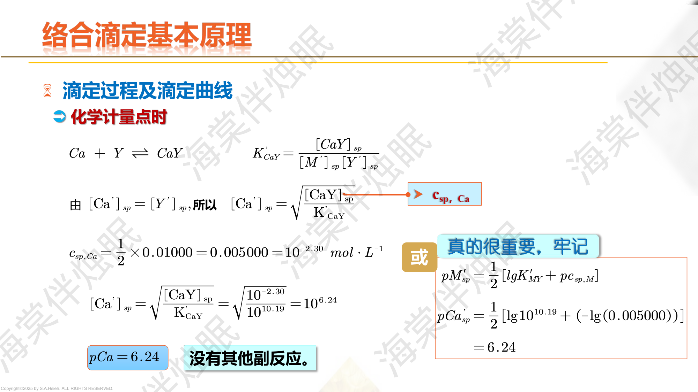
PPT: 金属指示剂的作用原理
金属指示剂（In）本身是一种有机配位剂，在游离态（$\text{In}$）和与金属配合态（$\text{MIn}$）颜色不同。
滴定终点：$\text{MIn} + \text{Y} \rightarrow \text{MY} + \text{In}$（颜色由 MIn 的颜色变为 In 的颜色）。
EBT 是一种偶氮染料，含有酚羟基和偶氮基作为配位基团。在 pH 8~11 范围内：
滴定过程：
溶液从紫红色变为纯蓝色，即为终点。
| 指示剂 | 缩写 | 适用 pH | 颜色变化（M-In → In） | 常测金属 |
|---|---|---|---|---|
| 铬黑 T | EBT | 8~11 | 紫红 → 蓝 | Ca, Mg, Zn |
| 二甲酚橙 | XO | < 6.3 | 紫红 → 黄 | Bi, Pb, Zn, Fe |
| PAN | PAN | 2~12 | 红 → 黄绿 | Cu, Ni, Zn |
| 钙指示剂 | NN | 12~13 | 酒红 → 蓝 | Ca |
指示剂的变色点定义为 $[\text{MIn}] = [\text{In}']$ 时对应的 $pM'$ 值：
$$\boxed{pM_t = \lg K_{\text{MIn}} - \lg\alpha_{\text{In}(H)}}$$其中 $K_{\text{MIn}}$ 是金属-指示剂配合物的稳定常数，$\alpha_{\text{In}(H)}$ 是指示剂的酸效应系数。
当 $[\text{MIn}] / [\text{In}'] = 1$ 时，恰好是颜色转变的中间点。实际观察到的变色范围为 $pM_t \pm 1$。
已知：$\lg K_{\text{ZnIn}} = 12.9$（EBT 与 Zn 的稳定常数），pH = 10 时 $\lg\alpha_{\text{In}(H)} = 5.0$。
$$pM_t = \lg K_{\text{ZnIn}} - \lg\alpha_{\text{In}(H)} = 12.9 - 5.0 = 7.9$$而 pH = 10 时，$\lg\alpha_{Y(H)} = 0.5$，$\lg K'_{\text{ZnY}} = 16.5 - 0.5 = 16.0$
若 $c = 0.01$ mol/L，$pZn'_{sp} = \frac{1}{2}(16.0 + 2.0) = 9.0$
$pM_t = 7.9$ 落在突跃范围内，EBT 可以用于指示 $\text{Zn}^{2+}$ 的滴定终点。
但 $pM_t (7.9) < pM'_{sp} (9.0)$，终点偏早，滴定结果略偏低。